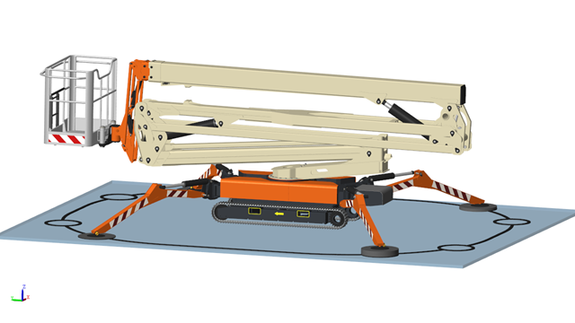

Boom Lift Crawler with Simscape

This example models a boom lift with hydraulic actuators. The lift has 6 hydraulic actuators in the chassis, 7 hydraulic actuators in the boom plus one other passive hydraulic cylinder. The mechanical model of the lift was created in CAD software and imported into Simscape Multibody.
- CAD geometry is imported to ensure accurate representation of masses, inertias, and joint locations.
- Mechanical effects are incorporated into the design, including ground contact, worm gear kinematics, cables, and flexible bodies
- Actuator requirements are refined using dynamic simulation with abstract actuator models
- Hydraulic components including valve blocks, pipelines, and actuators are integrated with the multibody model of the system.
- Modular testing ensures efficient development, as each actuation systemcan be tested in a separate model
- Integrated testing of physical system and controller is supported by combining a hydromechanical model with sensors and a logic controller.
- Interactive workflows are shown using dashboard blocks to test algorithms
- MATLAB Apps helps you open the model that best matches your needs.
Model
- Controls Model: Documentation, Model
- Hydraulics Model: Documentation, Model
Test Harnesses: Actuator Requirements
- Full Lift: Documentation, Model
- Chassis: Documentation, Model
- Boom: Documentation, Model
- Basket: Documentation, Model
Test Harnesses: Actuator Design
- Ground Manifold: Documentation, Model
- Outrigger: Documentation, Model
- Track Extend: Documentation, Model
- Sky Manifold: Documentation, Model
- Turret: Documentation, Model
- Lift: Documentation, Model
- Extend: Documentation, Model
- Jib (3D): Documentation, Model
- Jib (1D): Documentation, Model
- Basket Rotate: Documentation, Model
- Basket Level: Documentation, Model
- Basket Level Tilt: Documentation, Model
- Flexible Boom: Documentation, Model
Example Models